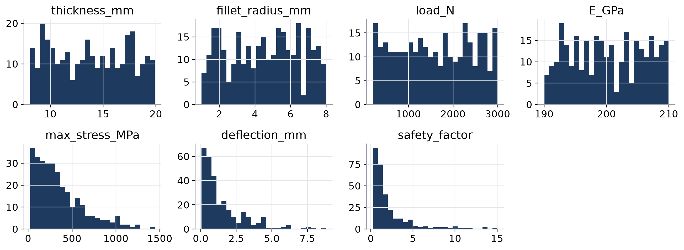
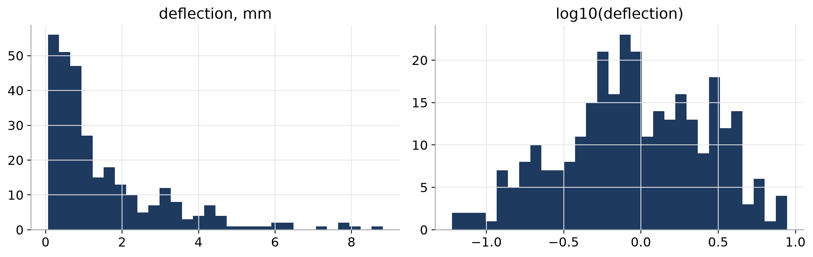
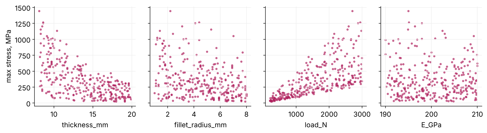
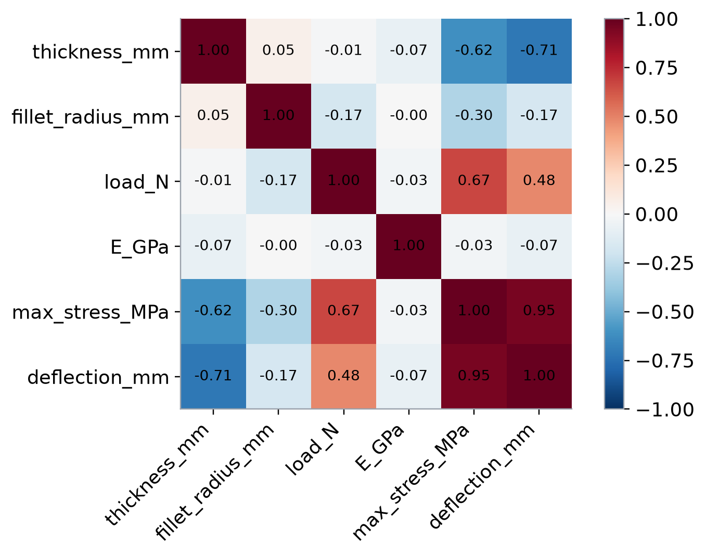
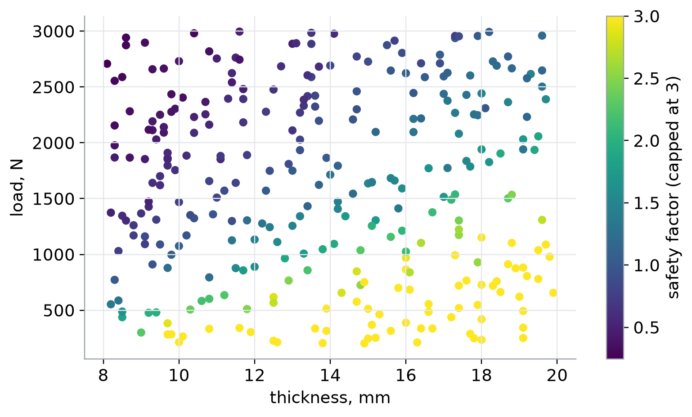

import pandas as pd
import numpy as np
df = pd.read_csv("data/bracket.csv")Exploratory data analysis
Session 9 · Topic 2.7 · Thu 14 Jan
Today
- What EDA is for — before any model
- A checklist for a calculation dataset
- One variable at a time: distributions
- Design-space coverage
- Relationships: scatter plots and correlation
- Checking physics in the data
- Writing down the findings
Setup for today
Why EDA?
Look at the data before you fit anything.
- find problems that cleaning missed
- learn which inputs matter and how (linear? threshold? interaction?)
- see where the design space is covered — and where it is empty
- set expectations: what accuracy is realistic, which model family fits
EDA is also the start of the model passport: domain of applicability, data volume, sources.
EDA checklist
- Structure — rows, columns, types, IDs (Session 6)
- Quality — gaps, duplicates, impossible values (Session 7)
- Distributions — every input and output on its own
- Coverage — how the inputs fill the design space
- Relationships — inputs vs outputs, inputs vs inputs
- Physics — do known trends appear in the data?
- Findings — short written list with numbers
Distributions
Numbers first
| mean | std | min | 50% | max | |
|---|---|---|---|---|---|
| thickness_mm | 13.84 | 3.48 | 8.10 | 13.75 | 19.90 |
| fillet_radius_mm | 4.54 | 1.99 | 1.00 | 4.60 | 8.00 |
| load_N | 1592.14 | 835.32 | 203.00 | 1605.50 | 2996.00 |
| E_GPa | 200.22 | 5.84 | 190.00 | 199.80 | 210.00 |
| max_stress_MPa | 357.26 | 277.58 | 23.60 | 284.75 | 1443.10 |
| deflection_mm | 1.53 | 1.58 | 0.06 | 0.91 | 8.82 |
| safety_factor | 2.13 | 2.41 | 0.25 | 1.25 | 15.04 |
- mean far from median (50 %) → skewed distribution
- compare min / max with the planned ranges
Histograms
df.drop(columns="run_id").hist(bins=25, figsize=(12, 4.5), layout=(2, 4), color="#B0215E")
plt.tight_layout(); plt.show()
- inputs: flat (uniform sampling, as planned)
- outputs: right-skewed — many moderate values, a long tail of high stress
Skewed outputs: try a log scale
fig, ax = plt.subplots(1, 2, figsize=(11, 3.6))
df["deflection_mm"].hist(bins=30, ax=ax[0]); ax[0].set_title("deflection, mm")
np.log10(df["deflection_mm"]).hist(bins=30, ax=ax[1]); ax[1].set_title("log10(deflection)")
plt.tight_layout(); plt.show()
A log transform often makes a skewed engineering output easier to model (Module 3).
Design-space coverage
Inputs against each other
What to look for
- empty regions → no data there → the model will extrapolate there
- inputs correlated with each other → hard to separate their effects
- clusters → the plan was not uniform
| thickness_mm | fillet_radius_mm | load_N | E_GPa | |
|---|---|---|---|---|
| thickness_mm | 1.00 | 0.05 | -0.01 | -0.07 |
| fillet_radius_mm | 0.05 | 1.00 | -0.17 | -0.00 |
| load_N | -0.01 | -0.17 | 1.00 | -0.03 |
| E_GPa | -0.07 | -0.00 | -0.03 | 1.00 |
Near-zero correlations between inputs: the random plan did its job.
Relationships
Output vs each input
fig, ax = plt.subplots(1, 4, figsize=(12, 3.4), sharey=True)
for a, c in zip(ax, inputs):
a.scatter(df[c], df["max_stress_MPa"], s=8, alpha=.6)
a.set_xlabel(c)
ax[0].set_ylabel("max stress, MPa"); plt.tight_layout(); plt.show()
- strong trends with thickness and load; weaker with fillet radius; none with E
- large scatter in each plot — the other inputs also vary
Correlation with the outputs
cols = inputs + ["max_stress_MPa", "deflection_mm"]
pd.DataFrame({
"pearson": df[cols].corr()["max_stress_MPa"],
"spearman": df[cols].corr(method="spearman")["max_stress_MPa"],
}).drop("max_stress_MPa").round(2)| pearson | spearman | |
|---|---|---|
| thickness_mm | -0.62 | -0.59 |
| fillet_radius_mm | -0.30 | -0.27 |
| load_N | 0.67 | 0.77 |
| E_GPa | -0.03 | 0.01 |
| deflection_mm | 0.95 | 0.96 |
- Pearson — linear relationship; Spearman — any monotonic relationship
- correlation ≠ importance, and ≠ cause; it only sees one input at a time
Correlation heatmap
c = df[cols].corr()
fig, ax = plt.subplots(figsize=(7, 5))
im = ax.imshow(c, cmap="RdPu", vmin=-1, vmax=1)
ax.set_xticks(range(len(cols)), cols, rotation=45, ha="right"); ax.set_yticks(range(len(cols)), cols)
for i in range(len(cols)):
for j in range(len(cols)):
ax.text(j, i, f"{c.iloc[i, j]:.2f}", ha="center", va="center", fontsize=9)
fig.colorbar(im); ax.grid(False); plt.tight_layout(); plt.show()
Two inputs at once: colour as third dimension
fig, ax = plt.subplots(figsize=(8, 4.5))
sc = ax.scatter(df["thickness_mm"], df["load_N"], c=df["safety_factor"].clip(upper=3),
cmap="RdPu_r", s=25)
fig.colorbar(sc, label="safety factor (capped at 3)")
ax.set_xlabel("thickness, mm"); ax.set_ylabel("load, N"); plt.show()
The pass / fail boundary is a curve in the (t, F) plane — not a straight line.
Checking physics
Does the data follow beam theory?
Beam theory: \(\delta \propto \dfrac{F}{E\,t^3}\). Combine the inputs into one variable:
df["F_over_Et3"] = df["load_N"] / (df["E_GPa"] * df["thickness_mm"] ** 3)
fig, ax = plt.subplots(figsize=(8, 3.8))
ax.scatter(df["F_over_Et3"], df["deflection_mm"], s=10)
ax.set_xlabel("F / (E t³)"); ax.set_ylabel("deflection, mm"); plt.show()
print("correlation:", round(df["F_over_Et3"].corr(df["deflection_mm"]), 4))
correlation: 1.0Why this matters
- a physically motivated combined variable turns scatter into a straight line
- this is feature engineering — often more valuable than a more complex model
- if the data does not follow known physics → suspect the data (units, mesh, status)
Your engineering knowledge is the most valuable part of an ML project. EDA is where it enters.
Writing down findings
n = len(df)
findings = [
f"{n} converged runs; inputs uniformly cover t 8–20 mm, r 1–8 mm, F 200–3000 N, E 190–210 GPa",
f"{(df.safety_factor < 1).mean():.0%} of runs exceed yield; SF ranges {df.safety_factor.min():.2f}–{df.safety_factor.max():.1f}",
"stress driven by load (+) and thickness (−); fillet radius smaller effect; E no effect",
"deflection is linear in F/(E t³) (r = %.3f)" % df.F_over_Et3.corr(df.deflection_mm),
"outputs right-skewed → consider log transform for modelling",
]
for f in findings: print("•", f)• 300 converged runs; inputs uniformly cover t 8–20 mm, r 1–8 mm, F 200–3000 N, E 190–210 GPa
• 39% of runs exceed yield; SF ranges 0.25–15.0
• stress driven by load (+) and thickness (−); fillet radius smaller effect; E no effect
• deflection is linear in F/(E t³) (r = 1.000)
• outputs right-skewed → consider log transform for modellingYour turn (30 min)
Full EDA of bracket.csv — produce a notebook with a findings list at the end.
- Distributions of all columns; which are skewed?
- Coverage: is there any region of (thickness, fillet radius) with few runs?
- Relationships: which input has the strongest effect on stress? On deflection?
- Physics: find a combination of inputs that makes stress linear. (Hint: nominal stress \(6FL/(b t^2)\), and the fillet effect.)
- Write 5 findings with numbers. Commit the notebook.
Summary
- EDA comes before modelling; it finds problems and sets expectations
- distributions → coverage → relationships → physics → findings
- Pearson for linear, Spearman for monotonic; correlation sees one input at a time
- combined physical variables (feature engineering) can make a problem almost trivial
- write findings down with numbers — they become the model passport
Next session: visualisation — making plots that are clear and honest.
Practice at home (~1 h)
- finish the EDA notebook and commit it
- repeat steps 1–3 on a dataset from your own work, if you have one
ML for Engineers · Modules 1–2